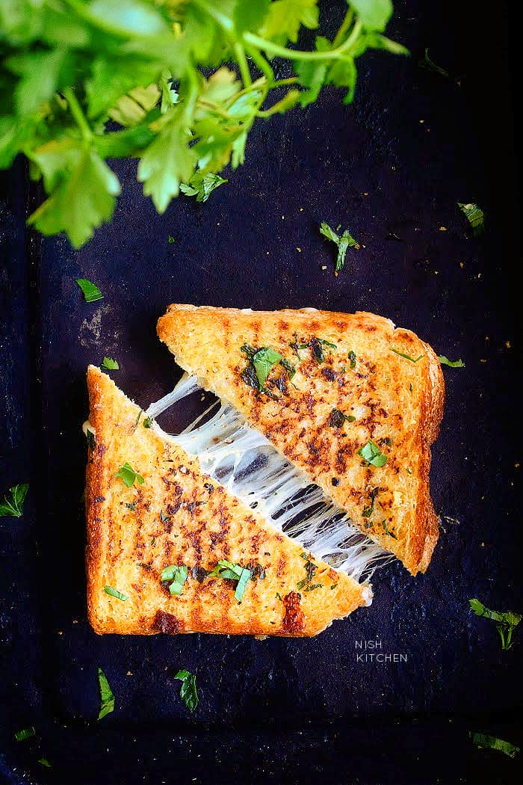

Garlic Bread Grilled Cheese

Description
Nothing is better than this crispy grilled cheese flavored with garlic butter.
Ingredients
Garlic Butter
- 1/4 cup melted butter
- 2 garlic cloves, minced
- 1 tablespoon parsley, finely chopped
- Salt and pepper
Grilled Cheese
- 4 tablespoons butter
- 4 bread slices
- 1/2 cup grated mozzarella
Steps
- To make garlic butter mixture, combine together butter, minced garlic and parsley in a small bowl. Season with salt and pepper. Set aside.
- Spread one side of a bread slice with one tablespoon garlic butter mixture. Repeat with the remaining bread slices. Set aside.
- Place a frying pan over medium-low heat. Add 1 tablespoon butter. When butter starts to melt, place bread buttered side down in the pan.
- Top with 2 tablespoons mozzarella. Top with another bread slice, buttered side facing upwards.
- When one side is golden, flip over to cook the other side until golden. This will take about 4-5 minutes. Remove the toasted grilled cheese from pan.
- Repeat with the remaining buttered bread slices, butter and cheese. Serve immediately.